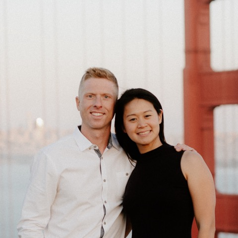

How We Got Here

We’re Abby and Justin — two SF parents with three kids under four and a shared belief that this city can do better for Mandarin immersion.
When we started looking at kindergarten for our oldest, we assumed San Francisco would have plenty of Mandarin immersion options. We were wrong. Across all of SFUSD, there are just 66 kindergarten seats. Hundreds of families apply every year. Most are turned away. The new school will double that.
For us, this is personal. Like many Chinese Americans in our generation, Abby grew up taking Saturday Chinese school and hated it. Now, we want something different for our kids. With immersion, kids don’t just study the language — they live in it. We want our children connected to their heritage in a way that feels natural. We both grew up in public schools, and we believe public education can offer this.
So we started showing up — at board meetings, in community conversations, connecting with families who felt the same frustration. When SFUSD committed to opening a Mandarin Immersion TK–8 school for 2027–2028, we stepped up to help make it real. In September, SFUSD announced the school and its temporary site, opening in fall 2027. None of this would have happened without the families who showed up. Today, more than 900 families have expressed interest, and we’re working directly with district leadership to help the school succeed, starting with finding its permanent home.
This effort is open to everyone. Our story is about heritage — but yours might be the cognitive advantages of bilingual education, a globally connected future for your child, or simply a richer learning experience. Whatever brings you here, you belong.